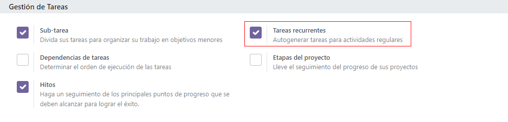
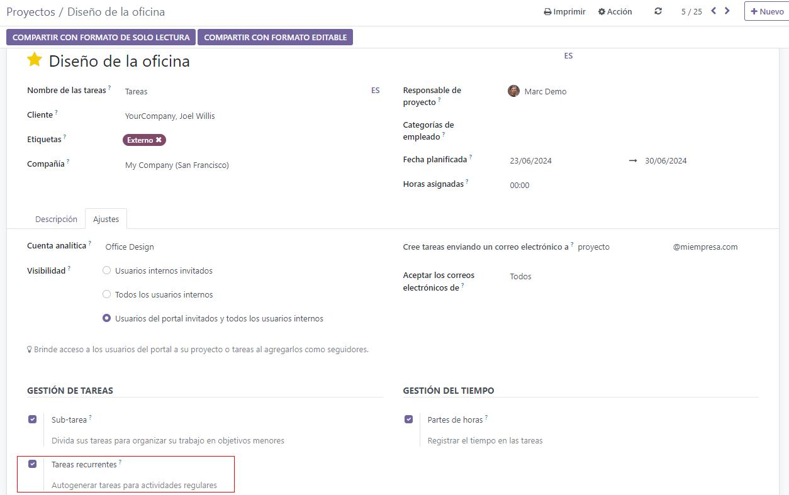

Recurring tasks¶
When handling a project, the same task often needs to be performed several times: for example, weekly meetings or status reports. The recurring tasks feature allows you to automate the creation of those tasks.
See also
Configuration¶
To enable recurring tasks, go to , then activate Recurring Tasks, and Save.
Recurring tasks are now activated on all existing projects. The feature can be deactivated on an individual project by clicking the drop-down menu button ⋮ next to the project name, then going to and disabling Recurring Tasks.
Set up task recurrence¶
In an existing task, go to the Recurrent tab, then check the Recurrent box. A set of options allows you to configure the frequency: Days, Weeks, Months, Years, and the number of repetitions.
On the scheduled recurrency date, a new task is created on your project dashboard with the following configuration:
Stage: first stage of the project dashboard (New or equivalent);
Name, Description, Project, Assignees, Customer, Tags: copied from the original task;
Milestones, Deadline, Timesheets, Chatter, Activities: those fields are not copied;
Subtasks: copied from the original task, which becomes a parent of all the tasks in recurrence;
A smart button on the task displays the total number of existing recurrences.
Tip
To see the task in your project dashboard before the scheduled date, consider setting up the recurrence date to a day earlier.
Edit or stop task recurrence¶
To edit the recurrence, open the task: a blue banner invites you to choose whether you wish to apply your changes to this task only or to a sequence of tasks.
To stop the recurrence, open the task, then go to the Recurrency tab and uncheck Recurrent.